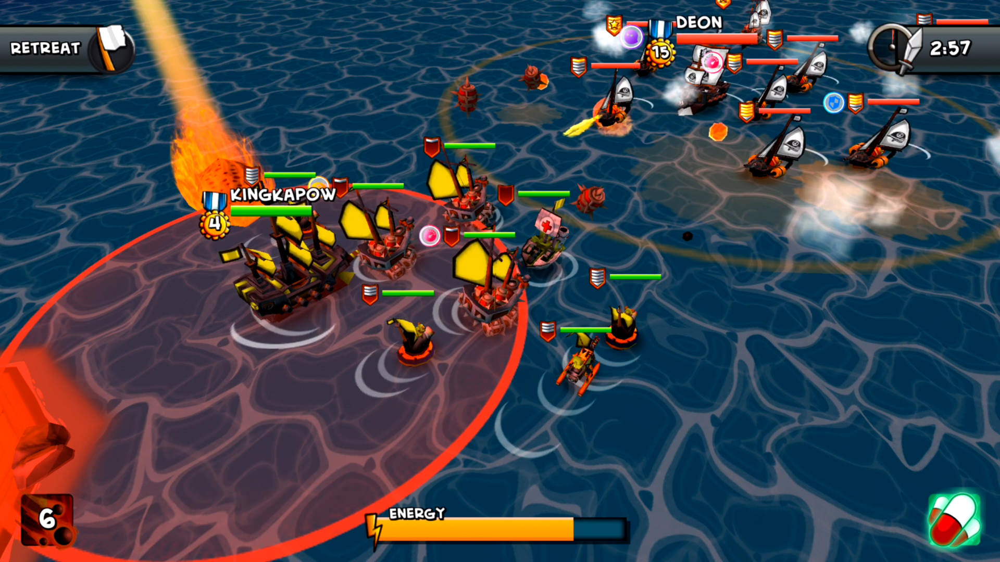
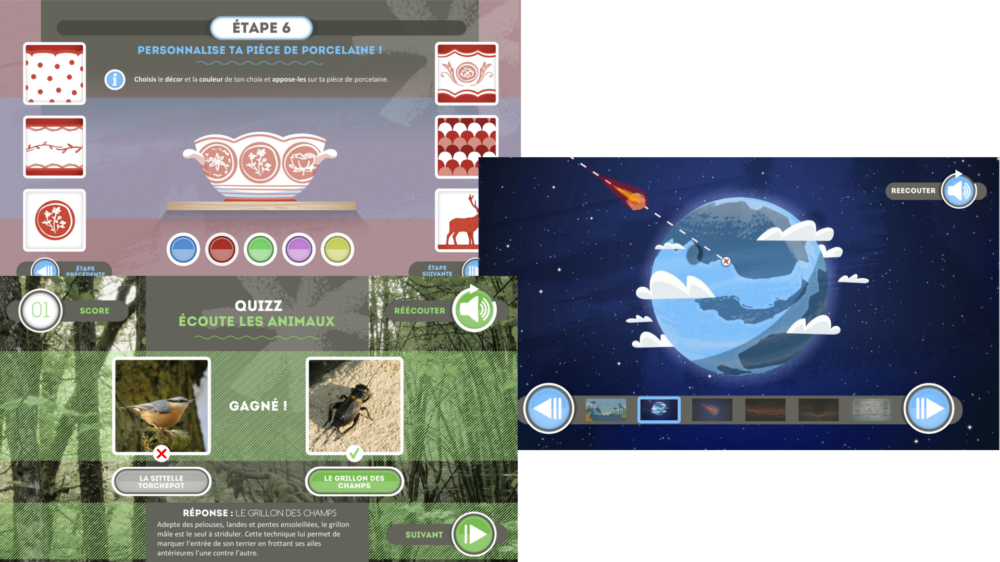
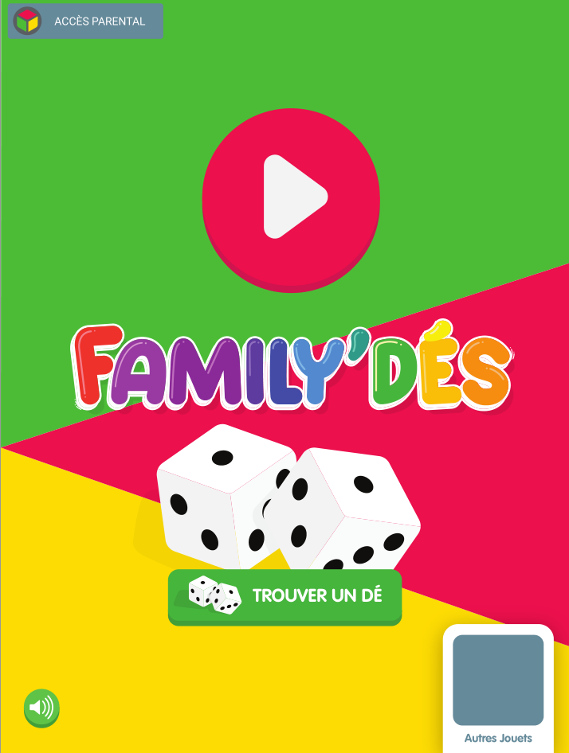
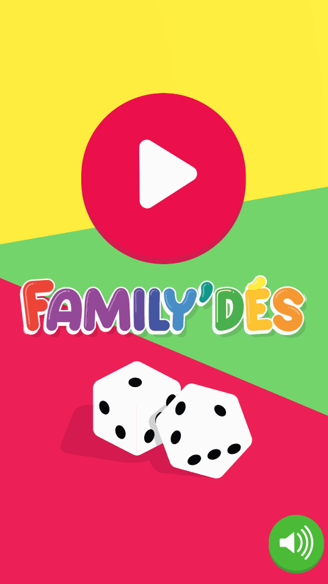
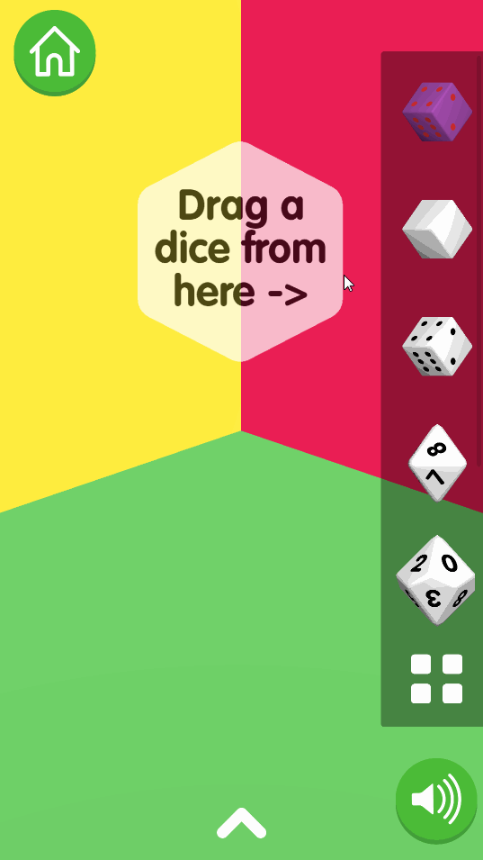
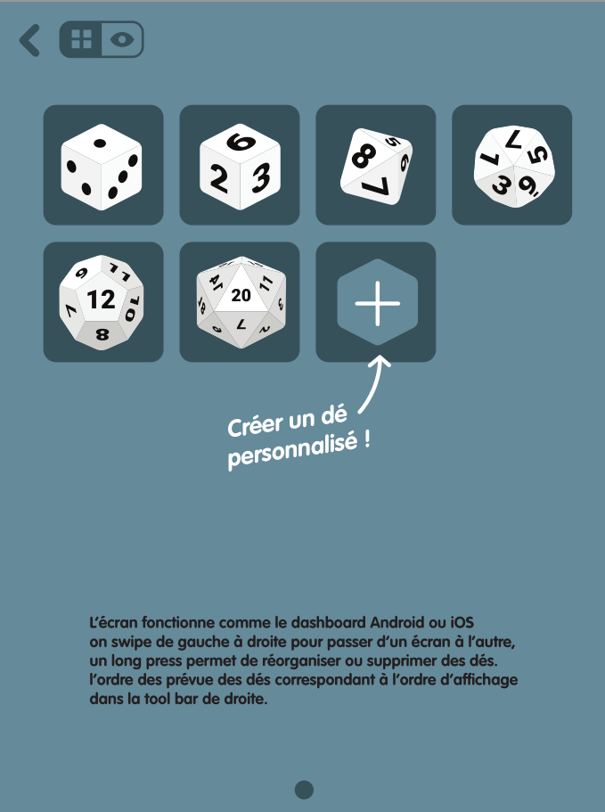
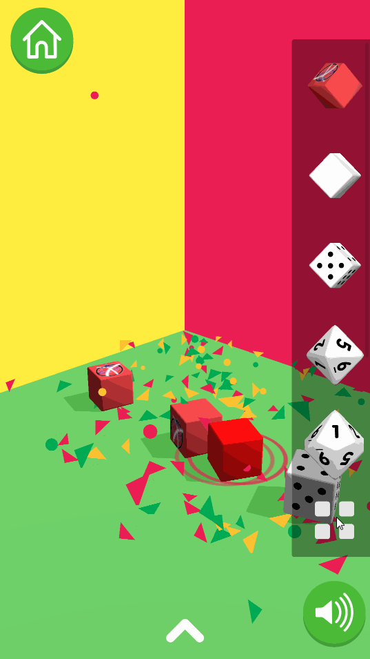
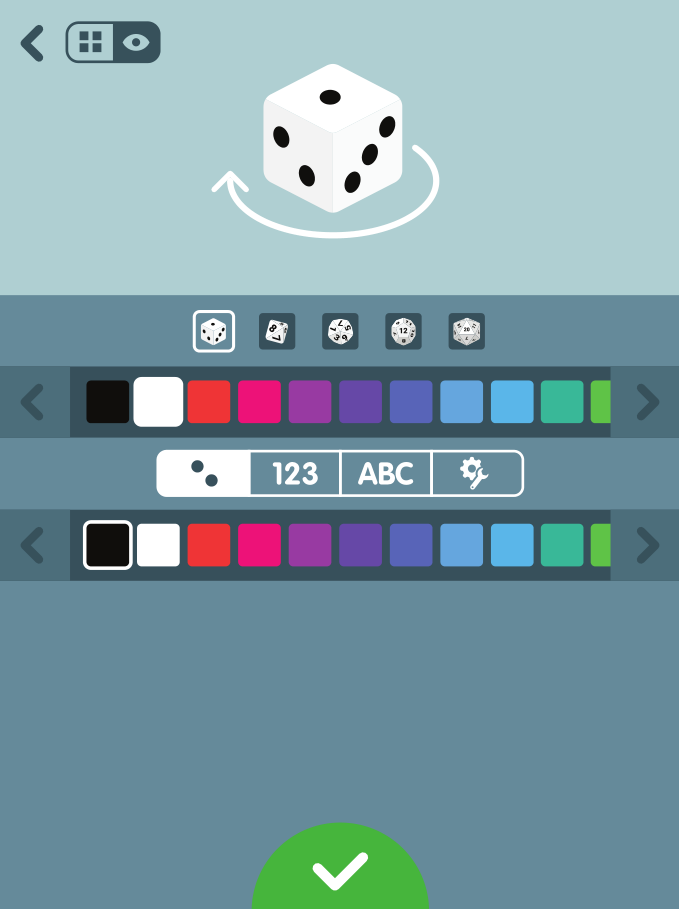
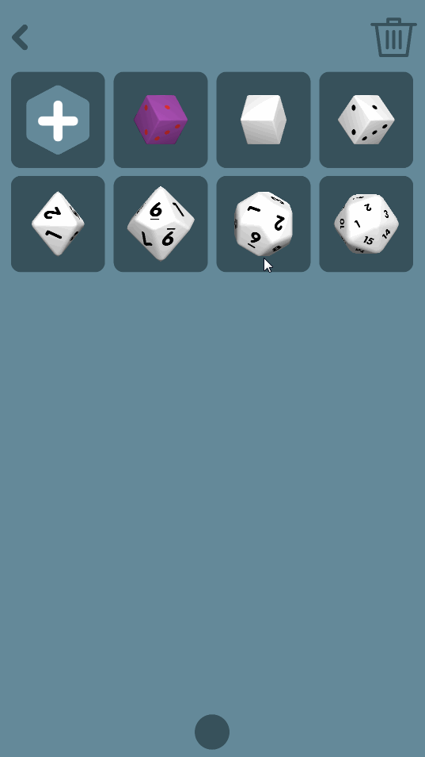
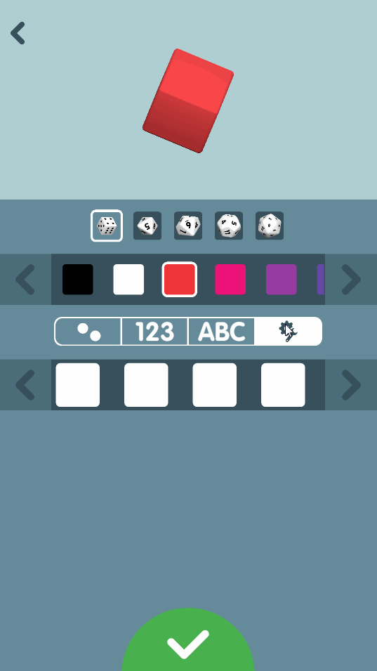

Vertical
Développement de Serious Game
Arnaud Cojez
Stage IVI du 13 mars au 1er septembre
Introduction
- Démocratisation du Serious Game
- Passion du jeu vidéo
- Master Image Vision Interaction
Table des matières
- Contexte
- Mission(s)
- Réalisation
- Bilan
Contexte
Vertical
- Création de jeux vidéo
- Prestation
- Indépendant
- Entreprise libérée
- Fondée en 2012

-

- Jeu de stratégie et gestion
- Amélioration du quartier général
- Mode multijoueur
Offres
Casual game
- Large public
- Très accessible
- Peut demander temps et maîtrise
Serious game
- Communiquer un message
- Souvent un casual game
- Publicitaire, pédagogique, formation...
Mais aussi...
- Réalité virtuelle
- Réalité augmentée
- Expertise Unity
- Analyse des données de jeu
- ...
Mission(s)
Applications pour parc naturel
Family Dés

Chroniric

Family Dés
- Application compagnon
- Plusieurs modèles de dés
- Personnalisation complète
- Environnement 3D et physique
Outils utilisés :
- Unity3D
- Unity Services
- Slack, Google Drive, Git
- Blender, GIMP
Découpage
- Mode Jeu
- Introduction
- Environnement 3D / Lancer
- Mode Personnalisation
- Galerie
- Personnalisation de dé
- Personnalisation de face
Réalisation
Introduction

Maquette |

Application |
Lancer

Maquette |

Application |
Galerie

Maquette |

Application |
Personnalisation de dé

Maquette |

Application |
Personnalisation de face

Maquette |

Application |
Bilan
État du projet Family Dés
- Arrive à terme
- Certaines interfaces à revoir
- Nouvelle introduction commandée
Bilan personnel
- Compétences IVI
- Compétences développement de jeux vidéo
- Beaucoup d'autonomie
- Communication avec les clients et l'équipe
- Initiative et créativité
Conclusion
- Stage très formateur
- Équipe à l'écoute et chaleureuse
- Secteur du jeu vidéo
- Encore beaucoup à apprendre